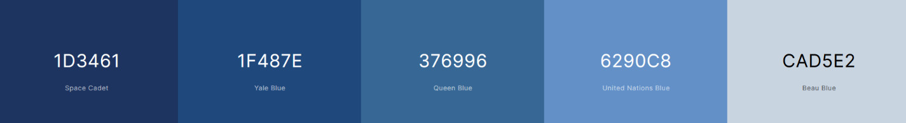

Color Scheme
Colors
(Colors from coolors.co)
Color Application
- Space Cadet for header and footer
- Yale Blue for navigation
- Queen Blue for navigation on hover
- United Nations Blue for body color
- Beau Blue for main color
- Black or White for text depending on contrast